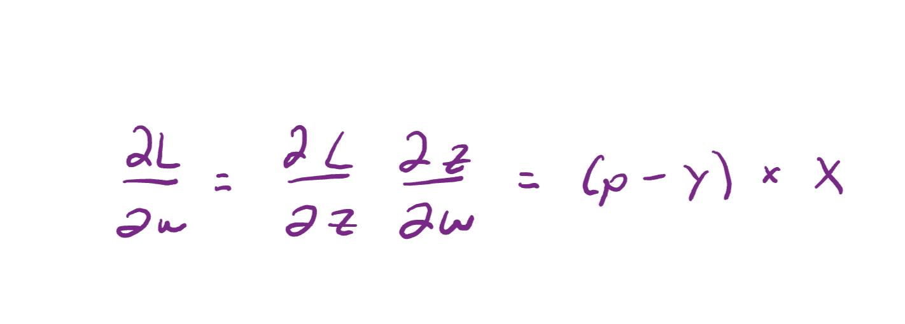
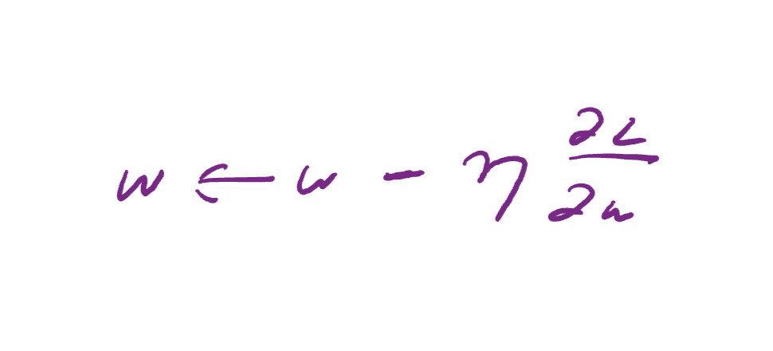
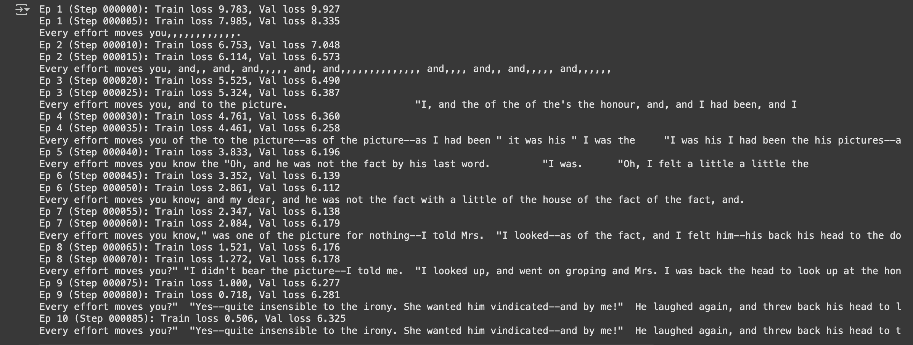

Chores and Training
August 9, 2025
Took a little bit of a break. Wanted to focus on my final. Firstly, I want to talk a little bit about the importance of organiation. Today, I reorganized most of the files such that they reflect a more professional look. I renamed the rough_build folder to src to indicate that it is the source code. I added the scripts folder, which is really great because this is where I would be combining all the functionalities from the source code. I was a little confused on this part before I knew script folders existed because I didn't really know where to neatly put all the stuff together. Lastly, I added a requirements page for some of the dependencies and a README. Little important stuff but great practices.
The main focus of today was creating and understanding the training function. In a top level overview, we grab the data from our data loader, load our model with it's configurations, design our epoch amounts and other information. But what actually goes on? I won't explain every single line, but by customary design of torch we take iterate through the input and target batch pairs created by the data loader. For each iteration, we set the optimizer (AdamW) to 0 to reset any previous calculations. Let's start with the first line.
First, we calculate the loss considering the target and the predictions using
loss = calc_loss_batch(input_batch, target_batch, model, device) . This uses
cross entropy to calculate the loss, as we talked about earlier. Then, we call loss.backward() .
This takes the current error, and calculates a gradient value that indicates exactly how much to adjust the weight.
In the photo below, \(p\) represents the probabilties created by the model, \(y\) represents
the one hot encodings, and \(x\) represents the error as calculted by cross entropy:

Moving forward, we call the line optimizer.step() . This is the part of the
training process that takes the gradient calculated in the previous steps, and optimizes the current weight
such that the model performs better. The symbol right next to the gradient value is the learning rate.
This is another user designed value that should be tweaked based on how effective the model is doing.

Before moving on, there was an entire sequence of the code dedicated to tracking the tokens seen and the loss values. This is really important, as we will go over tomorrow, in tracking the progress of our model. It will help us visualize if the model has stopped learning at a certain point, overfitted (where the model picks up on patterns to agressively) our other causes. However, after 10 training epochs, this is what our model was able to produce. Honestly super cool! Mind you, this is only trained on a very very small txt file. It would be amazing to train it on a bigger one.
